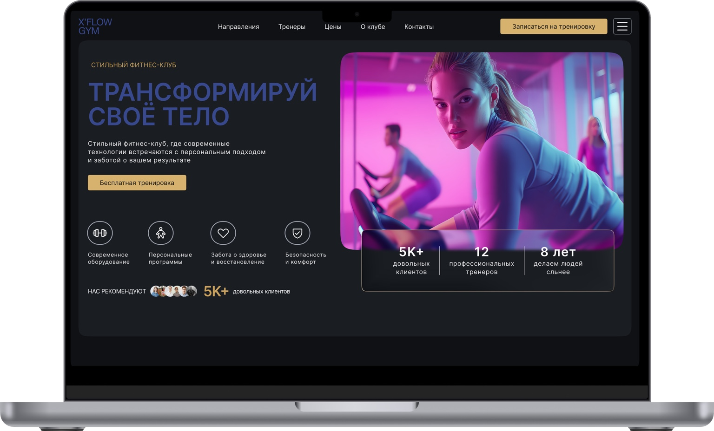

01 / PROBLEM
Навигация за меню
На первом экране направления спрятаны в компактном меню. Пользователь не видит широту предложения до взаимодействия.
От яркого первого впечатления — к понятному выбору тренировок и первому шагу в клуб.

Исходный экран выразительно передавал атмосферу клуба, но не раскрывал ассортимент тренировок, тренеров и дальнейший путь к записи. Задача редизайна — сохранить характер бренда, повысив ясность интерфейса.
На первом экране направления спрятаны в компактном меню. Пользователь не видит широту предложения до взаимодействия.
Сделать направления, тренеров, преимущества и запись доступными в одном последовательном сценарии.
Проектирование структуры и desktop-интерфейса по исходному концепту. Реальный запуск и пользовательские тесты не заявлены.
Проектная гипотеза: человек должен быстро понять, какие тренировки доступны, кому доверить занятия и как записаться. Сценарий построен на анализе двух макетов, а не на вымышленных интервью.
Понять предложение клуба
Выбрать формат занятий
Оценить условия и преимущества
Снизить неопределённость
Перейти к пробной тренировке
Вопрос: подходит ли мне клуб? Ответ интерфейса: понятное позиционирование и направления.
Вопрос: кто будет тренировать? Ответ: карточки тренеров, опыт, отзывы и информация о клубе.
Вопрос: как начать? Ответ: повторяющийся CTA на пробную тренировку в логичных точках страницы.
Сравнение исходного hero-концепта с обновлённой страницей. Нажмите на изображение для просмотра в полном размере.
Разделы и направления тренировок стали доступны без дополнительного поиска.
После первого экрана пользователь видит форматы занятий, тренеров и преимущества клуба.
Ключевой сценарий заканчивается понятным действием — заявкой на тренировку.
Направления, тренеры, цены и информация о клубе доступны из верхнего меню.
Заголовок, обещание ценности и CTA читаются до дополнительных декоративных элементов.
Появились карточки направлений, тренеров, отзывы и блок о клубе.
Графитовые поверхности создают спокойную основу, фотографии добавляют эмоциональность, золотой акцент выделяет ключевое действие. Это визуальные решения в макете, а не готовая библиотека компонентов.
Тёмная основа концентрирует внимание на контенте. Цветные фотографии формируют эмоциональный образ клуба, а тёплый золотой тон выделяет основные CTA.
Создан обновлённый desktop-макет с полноценной структурой лендинга. Измеримого роста конверсии и результатов юзабилити-тестов нет: проект не заявлен как запущенный продукт.
Посетитель получает последовательность: понять клуб → изучить направления → оценить тренеров → записаться.
Следующий этап — мобильная адаптация, интерактивная форма записи и тестирование сценария на real users.
Главный вывод: сильный визуальный образ привлекает внимание, но понятная архитектура помогает человеку двигаться к действию. Здесь редизайн объединяет оба подхода.